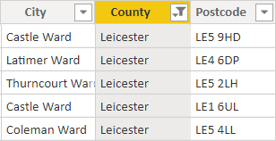

Additional exercises and known issues
These exercises are always improved upon through feedback from students. Where we find most students struggle to complete exercises in the allotted time frame, we often remove exercises that do not have a major impact on the end result. However, in some cases students still express an interest in resolving challenges that occur in these removed exercises, such as correcting regional data. In our dataset we have inaccurate geographical data. We can correct this by introducing another lookup table that pairs the first part of the customers UK postcode with a more accurate list of counties. If you would like to try this out, you will either need your completed PBIX file or the completed solution from Labs > Completed Labs > Lab 5 - Reports.
Additional Exercise – Correct UK Counties
|
Some of our customer data is geographical, however, there are many issues throughout the data that will lead to inaccurate visuals in our report. A lot of the customer data is incorrectly entered, for example a county being set to Leicester when Leicester is a city not a county. The city field is also incorrect for a lot of our data.
|
 |
Luckily, the postcode fields are all correct so we will use these postcodes to lookup the correct
counties based on the post code.
Adding the lookup table and refining geographical data